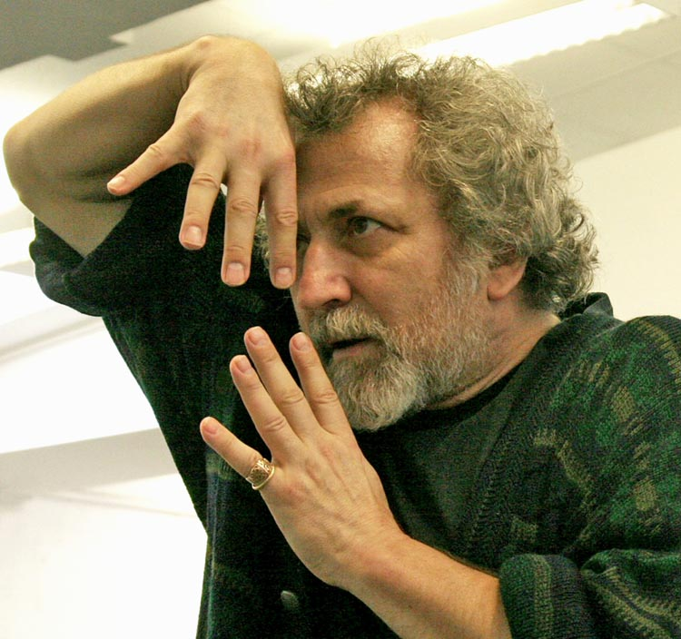
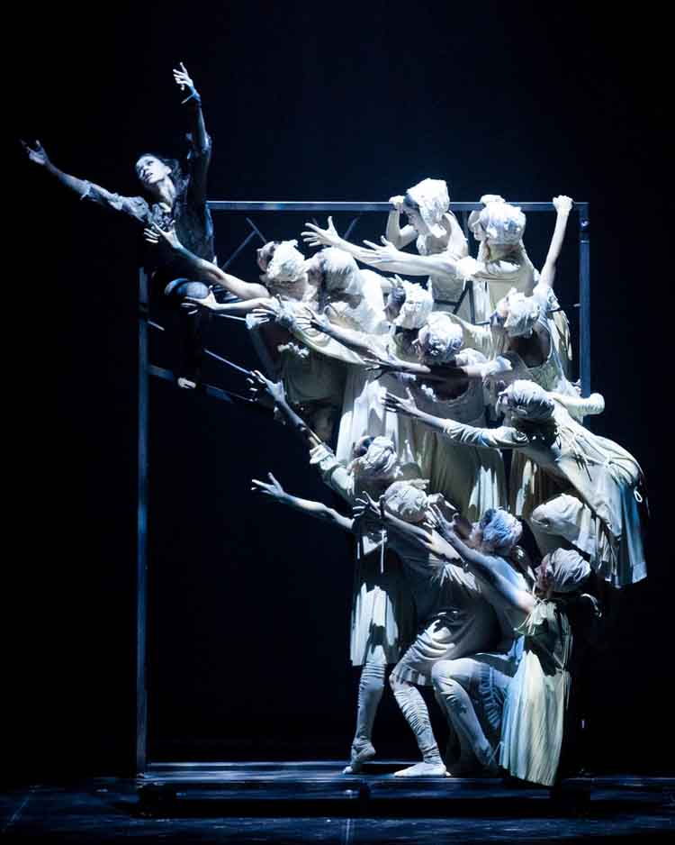
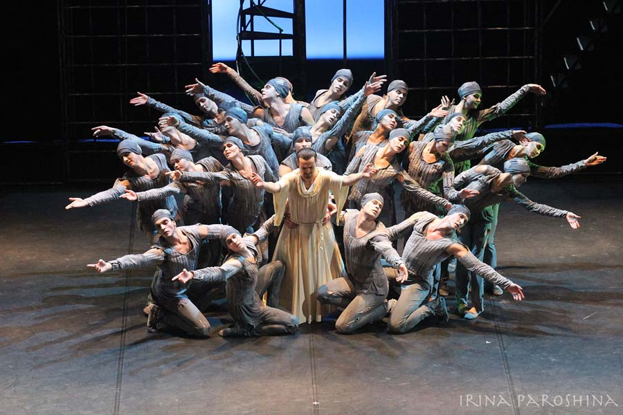
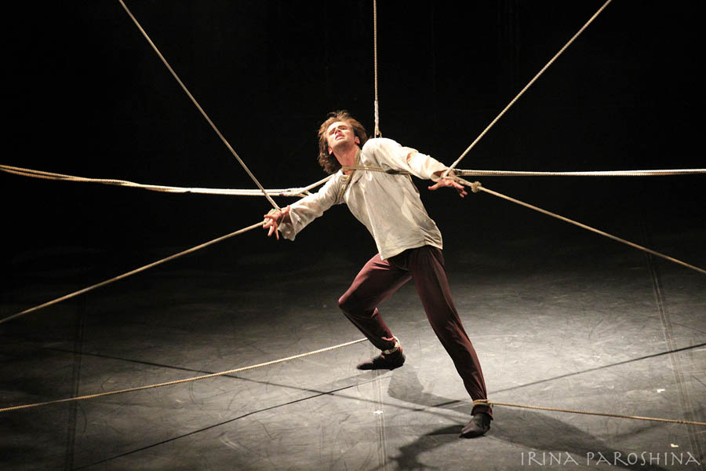
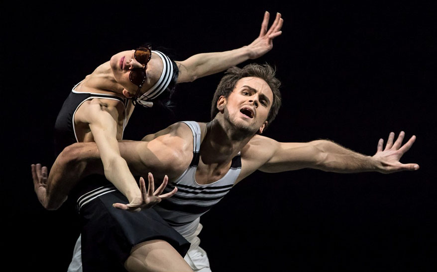
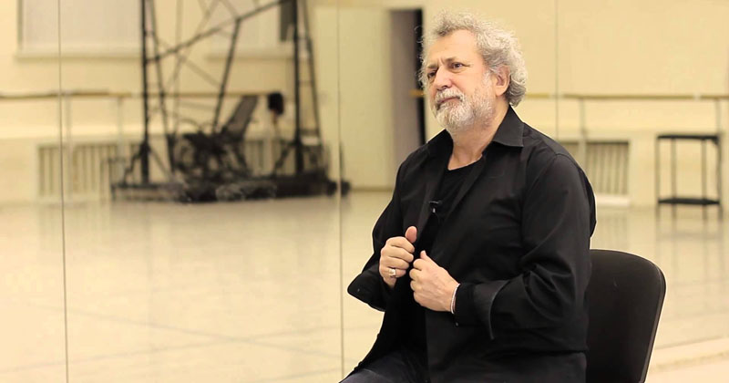

Борис Эйфман. Что мешает таланту?
Борис Эйфман: Таланту мешает сама природа человека.
Бориса Эйфмана спросили о том, что мешает состояться творческому человеку?

На моих глаза погибло очень много талантливых людей и даже гениев. Знаете, это бремя человеческих страстей. Когда человек что-то в себе обнаружит, особенно, если это в раннем возрасте, то вся жизнь – есть сопротивление, то, что не дает возможность реализовать талант, что нужно преодолеть. И тут начинается борьба за себя, борьба за свой дар, полученный от Бога. Я думаю, практически каждому дан дар Божий. Другое дело, каждый человек должен его открыть в себе и потом пронести этот дар через всю свою жизнь, развивая и доводя его до совершенства.

Это могут не все. Этот дар сидит внутри. Знаете, он как черт, который изнутри разрушает. Начинается алкоголизм, начинается наркомания, начинается разрушение потому, что человек не может найти выхода. В нем живет этот дар, он не дает ему жить спокойной, нормальной обыкновенной жизнью, а реализовать его не может, не может по разным причинам. Конечно, я согласен с тем, что мне многое в жизни дано и судьба меня, как то миловала что ли и вела меня. Но, поверьте, я для этого и сам очень много сделал. Вся свою сознательную жизнь я работал, работал и работал.
Мировая премьера балета Бориса Эйфмана "Роден"
В тринадцать лет в балетной школе я пробовал сочинять балеты. В шестнадцать лет у меня была своя самодеятельная компания. В шестнадцать лет я уже начал сочинять балеты. Ну не балеты – сцены. Но сцены были драматические. Помню, я сочинил маленький балетик на тему фильма «Путевка в жизнь» с Жаровым в главной роли. Я поставил балет «Беспризорники». Тогда мне было шестнадцать лет. Уже тогда мне нравилось ставить не просто танцы, а привлекать литературу, сюжеты из кино и т.п. это тоже мой дар, моя природа. Я не хотел его менять и развивал, развивал, развивал.

Я глубоко убежден, если серьезно покопаться в каждом из нас, то каждый что-то откроет внутри себя. Но как найти применение, как найти развитие, как отсечь от себя все лишнее и идти только одним путем развития этого дара? Это жертвенный, страшный путь. Это должно быть такое стечение обстоятельств. Потому что не всегда жизнь позволяет то, что ты хочешь. И бывает очень много трагедий на пути талантливых людей очень много печалей и очень много трагедий.

Поэтому в ответ на вопрос «Что мешает таланту?», думаю, что в первую очередь мешает сама природа человеческая. Она сопротивляется. Это очень разные категории. Талант – это как бы внутри, это аlter ego («альтер эго»; в переводе с лат. - «другой я»). Это живет другой человек внутри, он с тобой говорит, он тебя мучает, он требует какого-то развития. Он хочет расти. Но для того, чтобы он рос, его нужно питать, питать его рост. А ты хочешь жить другой жизнью. Потому что ты человек. А человек – слаб, как говорил наш классик. И этого сопротивления не каждый может выдержать. И поэтому очень многие гибнут. Поэтому, я думаю, что таланту, дару, талантливому человеку мешает сам человек, в котором этот дар заложен. И не каждый может победить в себе в своего «нормального» человека.
А творчество – это исходящее от таланта. Творчество это, если ты в конце концов победишь, то ты выходишь на какой-то путь.

Кстати, мой последний балет "Up & Down" - как раз об этом. Вы прекрасно знаете роман «Ночь нежна» (Фрэнсиса Фицджеральда. Опубликован в 1934 году). О том, как доктор Дик Дайвер загубил свой талант. Он был врач–психиатр. Врач-психиатр – своего рода мессия. Он спасал души людей. И этому он должен был посвятить свою жизнь, как Фрейд. Но его разум не подсказал ему, что он должен сохранить себя для высшей цели. И окончательный результат – это разрушение, деградация, это абсолютный Down. И это судьба человека, который не сохранил, не реализовал свой великий дар.

см. Творческая встреча с Борисом Эйфманом
от редактора: три важные мысли зацепили меня в этих словах Бориса Эйфмана:
1. Ответственность человека за дар, полученный от Всевышнего.
2. Он фактически описывает новозаветного внутреннего человека, который рождается при обращении человека к Богу Творцу.
3. Он предостерегает о сугубой важности следовать своему призванию, тому дару от Бога, который тебе дан.